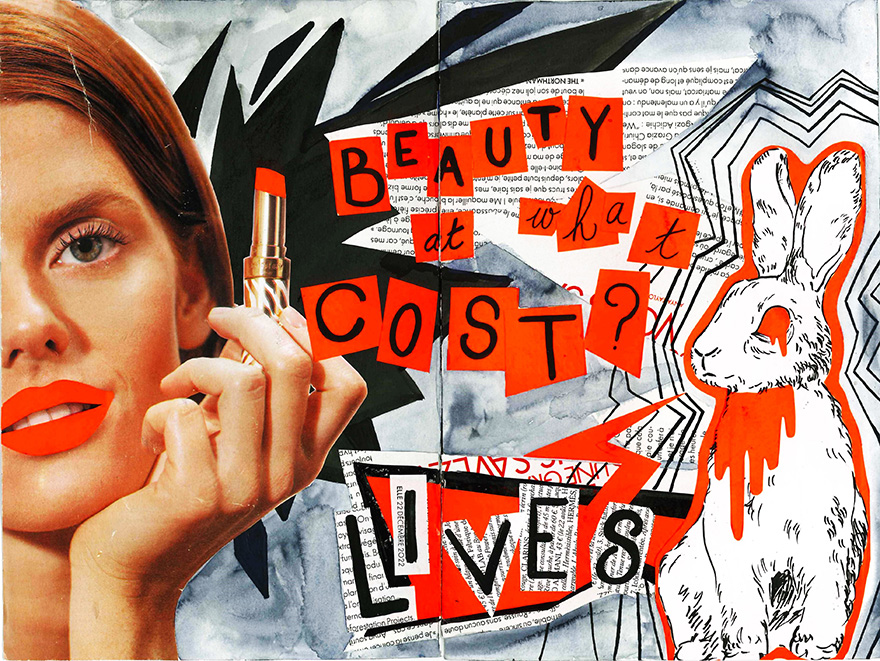
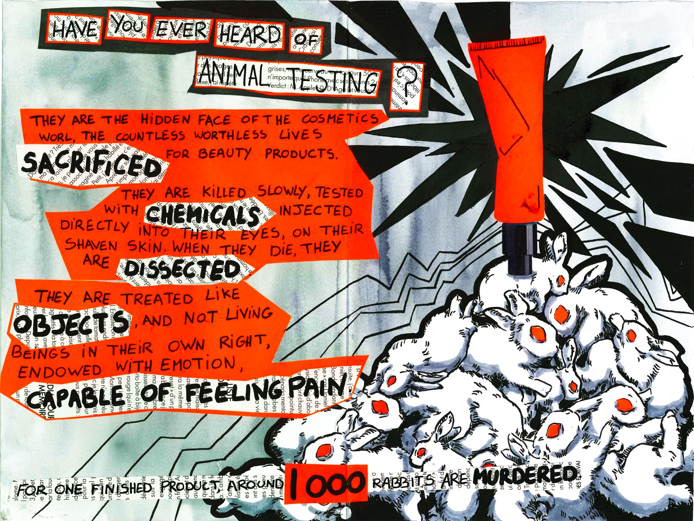
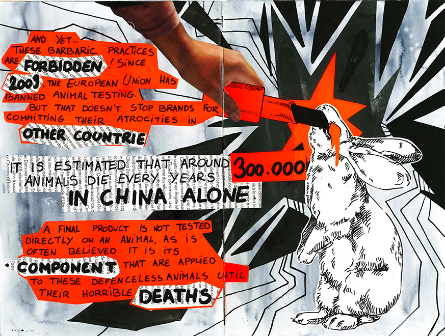
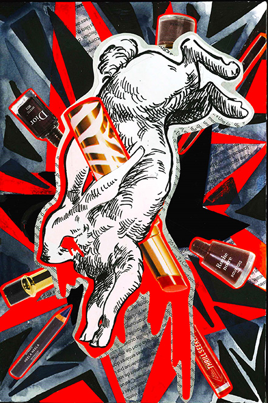

-FANZINE-
collage
April 2023
Entirely handmade using magazine cuttings, drawings and coloured paper.
This punk-inspired fanzine draws on research conducted by PETA to highlight animal cruelty in the cosmetics industry.
These tests are carried out on rabbits, as well as rats and guinea pigs. However, I have only worked with the image of the rabbit, due to its symbolism of innocence.
Inspiration: "Save Ralph" (2021), a stop-motion short film by Humane Society International.




